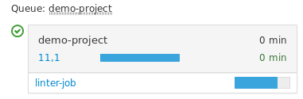
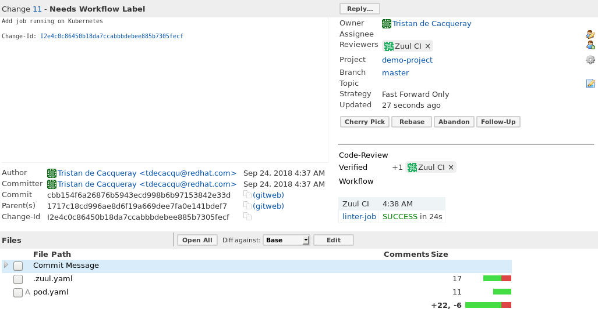
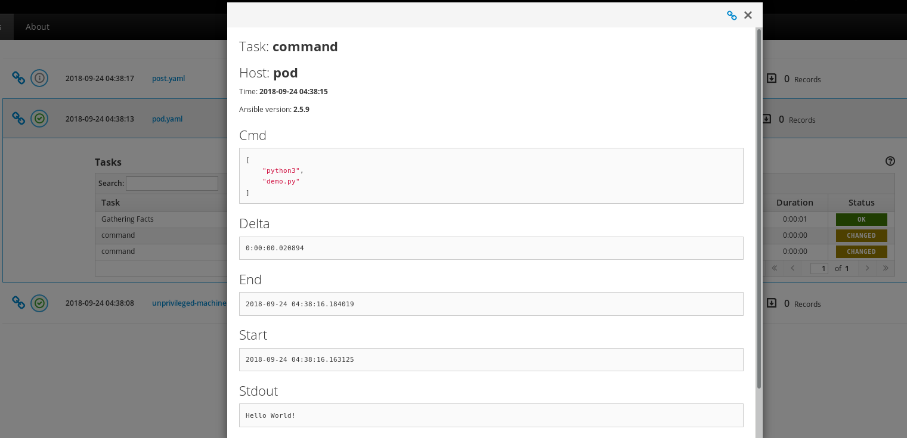

Note
The Kubernetes Driver is a tech-preview whose implementation is still under review upstream.
This article demonstrates how to use Kubernetes as a Nodepool resource provider.
Setup kube/config
The driver requires cluster admin access to a Kubernetes service. For example, on Openshift the cluster admin can be created using these commands:
oc login -u system:admin
oc create sa nodepool-k8s
oc adm policy add-cluster-role-to-user cluster-admin --serviceaccount=nodepool-k8s
oc policy add-role-to-user admin --serviceaccount=nodepool-k8s
oc sa get-token nodepool-k8s
Then the cluster admin user needs to be configured for the nodepool service:
sudo -u nodepool oc login CLUSTER_URL --token SA_TOKEN
Alternatively, the new provider could be configured in /etc/software-factory/sfconfig.yaml nodepool provider section. In this case, the sfconfig playbook would install the token to the nodepool .kube/config automatically.
Once the token is installed, use this command to get the context name:
sudo -u nodepool oc config get-contexts
CURRENT NAME CLUSTER AUTHINFO NAMESPACE
* ...:nodepool-k8s managesf-sftests-com:8443 ... myproject
Setup provider
Add this nodepool configuration file:
# /root/config/nodepool/k8s.yaml
---
labels:
- name: linter-pod
min-ready: 1
providers:
- name: my-k8s
driver: kubernetes
context: CONTEXT_NAME
pools:
- name: nodepool
labels:
- name: linter-pod
type: pod
image: docker.io/fedora:29
Merge this file, wait for the config-update job and check the nodepool launcher.log for any issues. If there are no exceptions, then Nodepool has automatically created a new namespace and a pod:
nodepool list
+------------+----------+------------+---------------------+-------+-------------+--------+
| ID | Provider | Label | Server ID | State | Age | Locked |
+------------+----------+------------+---------------------+-------+-------------+--------+
| 0000000000 | my-k8s | linter-pod | nodepool-0000000000 | ready | 00:00:00:05 | locked |
+------------+----------+------------+---------------------+-------+-------------+--------+
sudo -u nodepool oc --namespace=nodepool-0000000000 get pods
NAME READY STATUS RESTARTS AGE
linter-pod 1/1 Running 0 1m
After a job used that namespace, Nodepool automatically destroys it and re-creates one.
Setup job
Kubernetes pod doesn't work with synchronize task. Jobs that use a Kubernetes pod based nodeset need a a special parent job to push the test project source on the pod (in SF, the job is already configured and it is named: base-openshift-pod):
# demo-project/.zuul.yaml
---
- job:
name: linter-job
parent: base-openshift-pod
nodeset:
nodes:
- name: pod
label: linter-pod
run: pod.yaml
Here is the linter test playbook:
# demo-project/pod.yaml
---
- hosts: pod
tasks:
- command: ls -la
args:
chdir: "{{ zuul.project.src_dir }}"
- command: python3 demo.py
args:
chdir: "{{ zuul.project.src_dir }}"
Here is the running job status:
Here is the job review:
And here is the job result:
Note
Kubectl task execution output is not reported in the console-output because the zuul_stream callback requires a direct TCP connection to the test instance. However, the task output is available in the A.R.A. report.